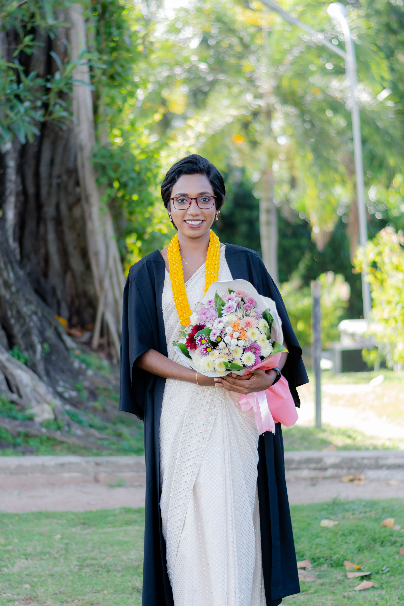
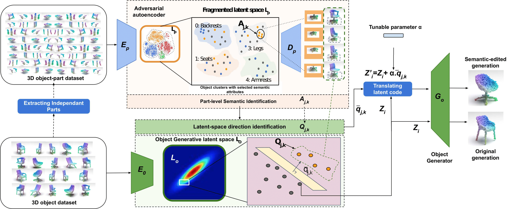
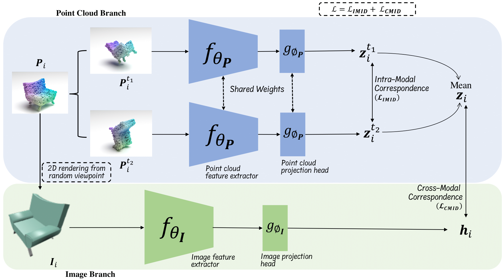
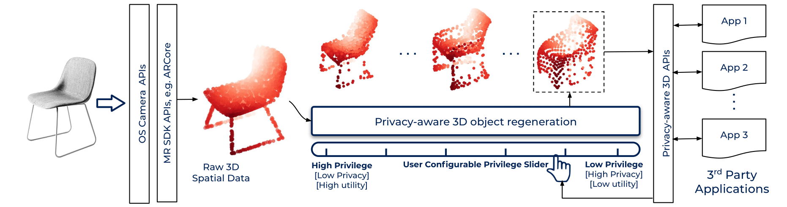
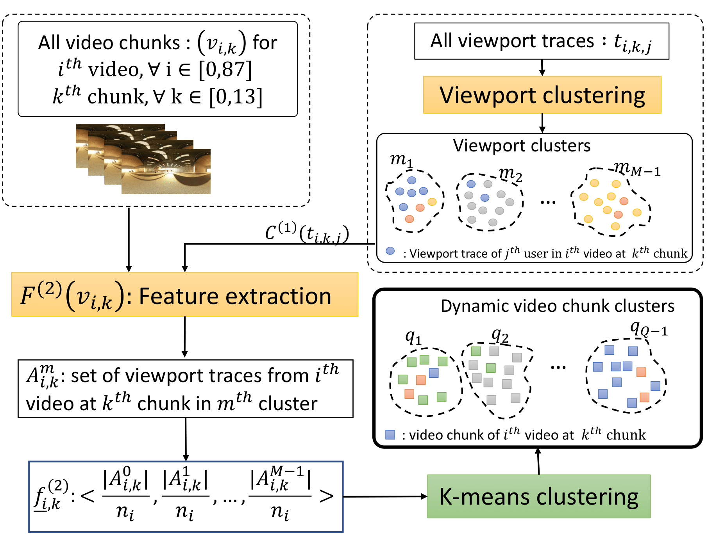
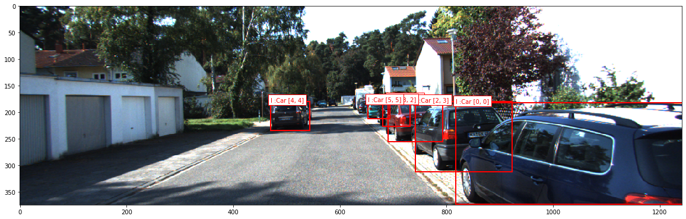
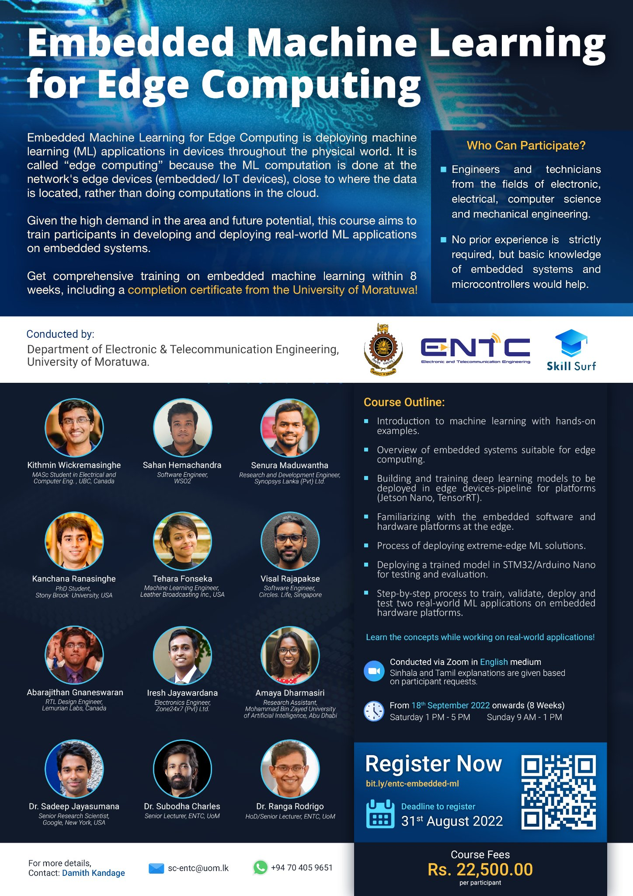

|
I am a first year PhD student in the (Princeton Visual AI lab) advised by Dr. Olga Russakovsky. I did my undergraduate studies at University of Moratuwa, Sri Lanka, where I completed my bachelors thesis on Learning representations for 3D pointclouds and semantic manipulation of 3D pointcloud objects. The thesis was advised by Dr. Ranga Rodrigo and Dr. Kanchana Thilakarathna. Previously, I interned as a visiting student researcher at the School of Computer Science, University of Sydney. Later I worked as a research assistant in Mohammad Bin Zayed University of Artificial Intelligence (MBZUAI) in the United Arab Emirates advised by Dr. Salman H Khan, of MBZUAI and Dr. Sadeep Jayasumana of Google Research. My broader research interests are in vision-language models, multimodal learning, and self-supervised learning. Email / CV / Google Scholar / Twitter / Github |
 |
{kind=link}
News
- September 2023: Joined Princeton University as a PhD student in the Department of Computer Science.
- December 2022: Graduated with BSc. Electronic and Telecommuication Engineering (Hone) from University of Moratuwa with the award for "Most Outstanding Graduand of 2022".
- October 2022: Presented our research at Learning to Generate 3D objects and Scenes ECCV2022 workshop
- July 2022: I started working as a Research Assistant in MBZUAI
- March 2022: One paper accepted to CVPR2022
- September 2021: Presented our research at NOSSDAV 2021 at ACM MMSys
- June 2021: Joined VeracityAI as Associate Machine Learning Engineer
- October 2020: Joined School of Computer Science - USYD as visiting student researcher
Research
|  |
Amaya Dharmasiri, Dinithi Dissanayake, Isuru Dissanayake, Mohamed Afham, Ranga Rodrigo, Kanchana Thilakarathna Learning to Generate 3D Objects and Scenes - ECCV 2022 Workshop Paper / Code Video Developed a point cloud autoencoder architecture to apply controllable transformations to 3D objects via latent space manipulations while preserving perceptual quality of 3D objects and their intended utility in Mixed Reality applications. |
|  |
Mohamed Afham, Isuru Dissanayake, Dinithi Dissanayake, Amaya Dharmasiri, Kanchana Thilakarathna, Ranga Rodrigo CVPR 2022 Paper / Code Project page Introduced a joint learning objective encapsulating intra-modal correspondence within point cloud modality and cross-modal correspondence between point cloud and 2D image modalities, leveraging contrastive learning. Produced state-of-the-art performance in downstream tasks; 3D object classification, few-shot object classification and 3D object part segmentation. |
|  |
Arpit Nama, Amaya Dharmasiri, Kanchana Thilakarathna, Albert Y. Zomaya, Jaybie Agullo de Guzman Arxiv Preprint Paper Proposed a privacy-preserving encoding for 3D point cloud objects with a continuous privilege spectrum for user-controllability of object privacy in mixed-reality applications. Evaluated the performance of the encoding against simulated object reidentification attacks using state-of-the-art point cloud classifiers. |
|  |
Amaya Dharmasiri, Chamara Kattadige, Vencent Zhang, Kanchana Thilakarathna NOSSDAV at ACM MMSys 2021 Paper | Code | Video Developed a dynamic categorisation framework for 360-degree video segments based on user viewport trends. This categorization is intended to support efficient caching and resource utilisation in tile-based 360 degree video streaming process. |
|  |
Amaya Dharmasiri, Ramith Hettiarachchi Isuru Dissanayake, Sadeep Jayasumana Technical Report We investigate different aspects of combining object detections between pairs of stereo images for a given object detector to improve the overall precision and recall. We also deduce a theoretical maximum for this improvement based on the correlation between the stereo pairs. |
Teaching
|  |
Department of Electronic and Telecommunication Engineering, University of Moratuwa, Sri Lanka Lectures - Introduction to Machine Learning September 2022 |
Experience
|
Research Assistant July 2022 - Present |
|
Associate Machine Learning Engineer June 2021 - February 2022 |
|
Visiting student researcher October 2020 - April 2021 Supervisor: Dr. Kanchana Thilakarathna. |
Education

|
Ph.D. in Computer Science September 2023 - Present |

|
Bachelor's in Science (Engineering) specialized in Electronics and Telecommunications August 2017 - July 2022 |